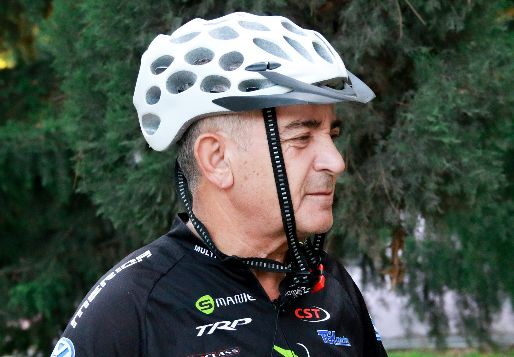

Oubliez tout ce que vous saviez sur les chondroprotecteurs. Ce médicament aidera même dans les cas les plus avancés.
Fait connu: les articulations douloureuses sont une voie directe vers un fauteuil roulant et une vie inférieure. Mais les histoires de guéris font croire que le désespoir ne vaut pas la peine, même dans les cas les plus difficiles.
Voici un exemple: Louis Martin est un gagnant de nombreuses compétitions et un participant régulier aux marathons de cyclisme. Louis a 62 ans et il connaît de première main l'arthrite. Mais grâce à un moyen moderne et peu coûteux, le retraité a pu revenir à une vie épanouie.
C'est de lui que Louis a parlé à notre correspondant.
Louis MartinJournaliste:Comment s'est déroulée la réadaptation après la maladie et comment êtes-vous arrivé au cyclisme?
Louis:J'ai commencé petit: faire de l'exercice le matin et faire du jogging. Les enfants ont également donné un vélo d'exercice-j'ai dû le maîtriser. Un jour, je me suis dit: pourquoi je pédale dans les quatre murs comme un imbécile? J'ai acheté un vélo ordinaire, qui est devenu mon principal moyen de transport.
Une fois appris sur le marathon cycliste «pour ceux qui sont pour...». Je me suis dit: «qu'est-ce qui ne plaisante pas?» Et dans la première course de sa vie, il a pris la place du prix. C'était inattendu, mais très inspirant. S'il n'y avait pas eu de victoire, la participation au marathon serait peut-être restée un épisode.
Journaliste:Depuis combien de temps souffrez-vous d'arthrite?
Louis : L'arthrite est avec moi depuis plus de dix ans. La douleur était progressive, douloureuse. Encore une fois, vous ne bougerez pas sans analgésique. L'arthrite est le genre de maladie qui ne vous laisse jamais oublier. Je ne comprendrai que ceux qui le connaissent de première main. J'ai écouté tous les conseils, même absurdes. Maintenant, j'aurais tordu la tempe, mais il y a quatre ans, j'ai essayé d'être traité même avec du fumier. Extérieurement, heureusement.
Oui, parfois, la douleur physique prive la pensée critique.

Journaliste: Que, à la fin, vous avez guéri l'arthrite?
Louis:Mon salut était . Quand je viens de commencer le cours de ce médicament, je me suis déjà préparé moralement au pire, mais je n'ai pas perdu ma foi dans le meilleur.

Et le «miracle» est arrivé: une semaine après le début du cours, j'ai senti que je me sentais mieux. Je ne l'ai pas pris au sérieux, car je suis habitué à tout être sceptique. J'ai décidé qu'une période aiguë s'était simplement écoulée et qu'un soulagement temporaire s'était produit. Mais voici une autre semaine-une autre, et je vais de mieux en mieux.
Après avoir terminé le cours d'admission , il a passé tous les tests nécessaires. Mon médecin n'était pas moins choqué que moi dans le bon sens – tous les indicateurs étaient parfaits, comme chez une personne absolument en bonne santé qui n'avait jamais eu de problèmes articulaires.
Qu'est-ce qui est dû à l'action miraculeuse d'? Nous avons demandé à un célèbre rhumatologue, professeur Jean Buchon.
 Jean Buchon
Jean Buchon
« – c'est, comme on l'appelle communément, un chondroprotecteur de cinquième génération. il se compose de trois ensembles de composants – analgésiques, désinfectants et réparateurs du tissu cartilagineux. Ainsi, il est capable de remplacer plusieurs médicaments à la fois. Et la force de l'effet sur la maladie dépasse à plusieurs reprises les autres médicaments connus.
– pas un chondroprotecteur ordinaire. Il ne protège pas seulement l'articulation de la destruction supplémentaire. Il déclenche le processus de régénération des tissus.
Ce remède est particulièrement remarquable car il se compose uniquement d'ingrédients naturels et n'a absolument aucun effet secondaire.
Malgré sa grande efficacité, est à peine trouvé dans les pharmacies. Heureusement, notre équipe de rédaction a réussi à contacter le Fabricant et à le trouver site officiel,où commander sans frais de pharmacie.
Commentaires
Merci de partager un outil merveilleux! Commandé, en attente pour le colis avec impatience
Aussi commandé
Il y avait de l'arthrite aux articulations du coude. Inflammation sévère et douleur insupportable. Le médecin traitant a prescrit , a du mal à le trouver à la pharmacie, alors merci beaucoup pour le lien!
Merci pour ce remède!! J'ai eu trois dernières années juste un désastre avec les articulations. Presque cessé de marcher normalement! Le sauvetage est devenu . Honnêtement, je ne croyais pas que cela aiderait. Mais à la fin, deux jours plus tard, j'ai ressenti un soulagement significatif. En une semaine, la raideur et la douleur ont disparu. Complètement les articulations ont récupéré quelque part en 1,5 mois. Cela a confirmé même un examen à la clinique. Je recommande à tous.
J'ai lu les détails sur sur le site officiel. Impressionnant! Commandé en vente.
J'ai 50 ans. a essayé l'année Dernière. Il m'a sauvé aussi. Les articulations douloureuses sur les doigts. Ça ne fait pas mal maintenant. Je l'ai pris moi-même, je ne suis pas allé chez le médecin.
J'ai laissé une demande, j'attends le colis! Merci pour l'article et pour l'histoire! Vous êtes un grand bien, alors gardez!!
Une amie a pris cet outil. Elle souffre depuis longtemps avec des articulations. Elle a été très bien aidée. Louanger.
est un excellent remède pour le traitement des articulations. J'ai vérifié sur moi-même. J'ai eu mal au bas du dos toute ma vie. Problème héréditaire. J'ai déjà contourné tous les OS, les massothérapeutes et les guérisseurs populaires. Ces dernières années, j'ai déjà eu du mal à attacher mes lacets. Puis, dans le journal, j'ai lu ce médicament. Décidé d'essayer, commandé à site officiel. Jusqu'à la fin n'a pas guéri, il est devenu nettement mieux. Aucune injection, pilule et onguent n'a aidé depuis . Très heureux avec lui.
Oui, le journal a écrit sur pour la restauration des articulations. Ils ont également écrit qu'une percée dans le traitement. Il faut essayer de commander
J'ai reçu un courrier hier. Déjà commencé le cours
La moitié de la vie a fait mal aux genoux. Sur les conseils du médecin a commencé à prendre . En conséquence, depuis six mois, rien ne fait mal. Auparavant, comme vous, Stepan, ne pouvait pas marcher, mais maintenant, aussi, j'ai fait du sport - je cours tous les jours le matin.
Merci pour le lien! Intéressant. A laissé une demande.